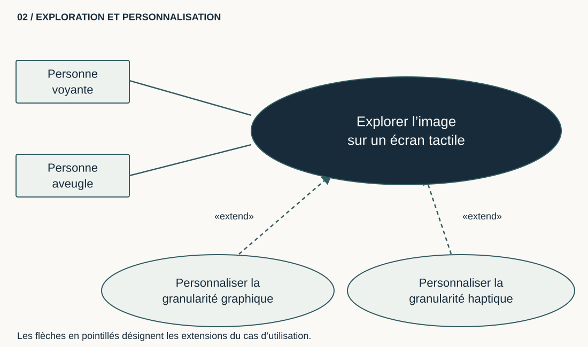
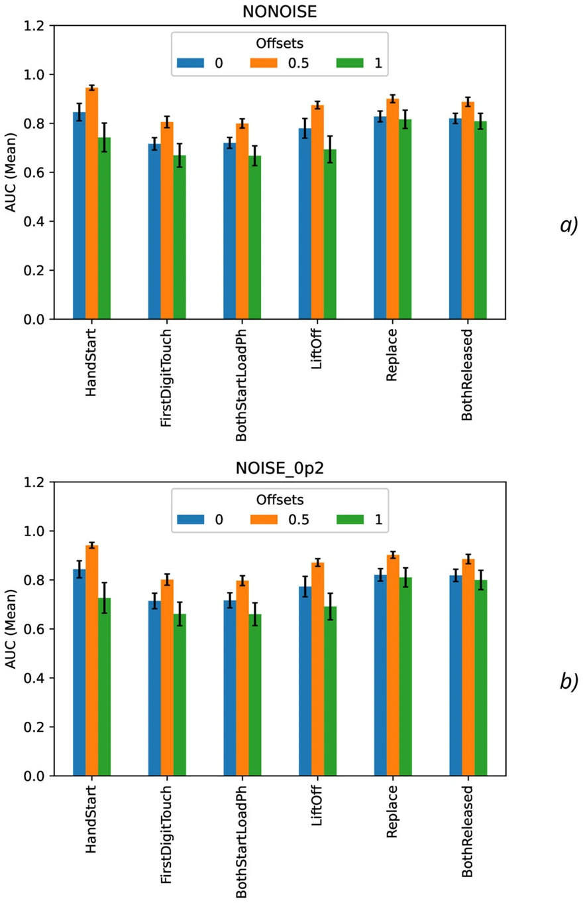
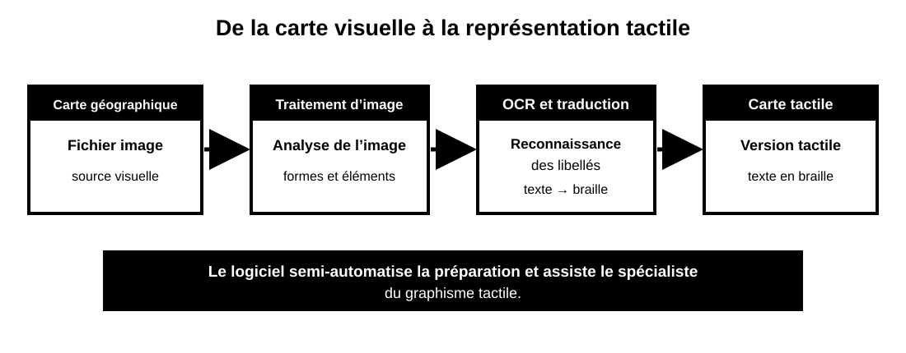

Sami Rojbi · thèse soutenue en 2022
Co-encadrement à 50 % en co-direction internationale sur l’adaptation de documents numériques en éléments tactiles pour des personnes à besoins spécifiques.
Travaux scientifiques
Mes travaux explorent l’accessibilité des images et des cartes tactiles, l’analyse multimodale de la fatigue, les interfaces cerveau-machine fondées sur l’EEG et les interfaces d’assistance multimodales. Les sections ci-dessous associent des schémas explicatifs à des figures issues de publications.
Axe 1
Schémas redessinés et traduits à partir des diapositives du séminaire ICH de l’auteur. Ces illustrations expliquent les méthodes et ne sont pas des figures de résultats reproduites.




Axe 2

Travail associé : Parallel Statistical and Machine Learning Methods for Estimation of Physical Load (2018).
Revenir aux axes de recherche ↑Axe 3
Figures 2 et 8 : Gordienko, Gordienko, Taran, Rojbi, Telenyk et Stirenko (2025), Frontiers in Neuroinformatics. Aperçus réduits ; originaux en grand conservés sans modification. Article source · CC BY 4.0.

Chaque rangée correspond à l’une des six actions : HandStart, FirstDigitTouch, BothStartLoadPhase, LiftOff, Replace ou BothReleased. Les colonnes montrent différents instants de la séquence ; les couleurs codent l’amplitude EEG selon l’échelle de la figure. Ces cartes visualisent les données enregistrées, et non la performance du classifieur.
Le temps est exprimé en millisecondes et l’amplitude en microvolts (µV). Chaque rangée possède sa propre échelle de couleur : les couleurs ne se comparent donc pas directement d’une action à l’autre.

L’axe horizontal énumère les six actions ; l’axe vertical indique l’AUC moyenne (aire sous la courbe ROC). Ce graphique synthétise les performances pour les longueurs de séquence étudiées. L’offset 0,5 présente l’AUC moyenne la plus élevée pour chaque action. Les auteurs ne considèrent pas l’écart entre 0 et 1 comme statistiquement significatif. La proximité des deux panneaux ne démontre pas un gain universel dû au bruit synthétique.
L’offset situe l’étiquette dans la séquence EEG d’entrée : au début (0), au milieu (0,5) ou à la fin (1).
Axe 4

Le processus part d’un fichier image de carte géographique. Le logiciel applique des techniques de traitement d’image, repère les libellés par OCR, puis traduit les textes reconnus en braille pour produire une version tactile. Le spécialiste du graphisme tactile est assisté tout au long de la préparation ; le schéma résume le principe décrit par les auteurs.
Publication : Nizar Bouhlel et Anis Rojbi, New Tools for Automating Tactile Geographic Map Translation, ACM ASSETS ’14, 2014, p. 313–314. Consulter la notice et le résumé de l’article.
Revenir aux axes de recherche ↑Axe 5

L’interface de réalité augmentée fournit des interactions visuelles, sonores et tactiles. Les réponses neurophysiologiques de l’utilisateur sont mesurées par une interface cerveau-machine (BCI/EEG), puis interprétées par apprentissage automatique. L’information obtenue peut servir à adapter le retour présenté à l’utilisateur. Il s’agit d’une représentation du concept proposé dans le chapitre, et non d’un résultat d’évaluation de l’interface.
Publication : User-Driven Intelligent Interface on the Basis of Multimodal Augmented Reality and Brain-Computer Interaction for People with Functional Disabilities, conférence FICC 2018, chapitre publié en ligne en 2018, p. 612–631. Consulter le chapitre chez Springer.
Revenir aux axes de recherche ↑Doctorat et coopération scientifique
Encadrements autour de l’accessibilité tactile et de la prédiction de l’état de santé par apprentissage automatique.
Co-encadrement à 50 % en co-direction internationale sur l’adaptation de documents numériques en éléments tactiles pour des personnes à besoins spécifiques.
Co-encadrement à 25 % d’une cotutelle internationale sur le suivi et la prédiction de l’état de santé par apprentissage automatique.